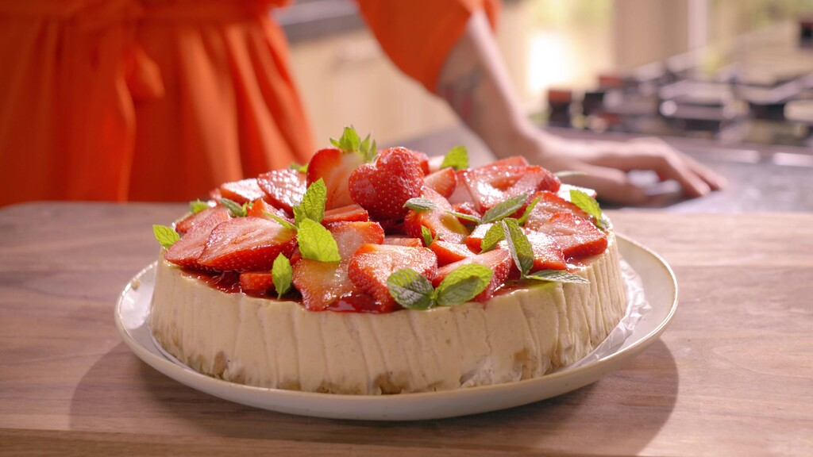

Strawberry cheesecake
Deze strawberry cheesecake is super lekker. Serveer hem als nagerecht!
Ingrediënten
- 200 g roomboterkoekjes
- 80 g boter
- 1 vanillestokje
- 900 g verse roomkaas
- 250 g suiker
- 115 g zure room
- 5 eieren
- 30 g bloem
- 250 g aardbeienjam
- 1 bakje verse aardbeien
- springvorm van 24 cm doorsnede
Bereidingswijze
- Verwarm de oven voor op 130 ºC. Smelt de boter. Verkruimel voor het deeg de koekjes en meng
met de gesmolten boter. Vet
de taartvorm in met een beetje boter en druk de koekkruimels er stevig in.
- Snijd het vanillestokje open en schraap het merg eruit. Meng voor de vulling alle ingrediënten
in de keukenmachine tot
een gladde massa. Schep de vulling op de kruimelbodem.
- Leg een ovenschaal onderin de oven. Vul deze met water (hoeft niet warm te zijn). Bak de cake
in circa 2 tot 2,5 uur in
het midden van de voorverwarmde oven.
- Laat de taart afkoelen na het bakken. Haal de taart uit zijn vorm en verwarm de aardbeienjam.
Was de aardbeien en snijd
ze in stukjes. Meng de aardbeien met de aardbeienjam en bestrijk de taart ermee.

Tip:
Slagroom erbij is een overheerlijke keus